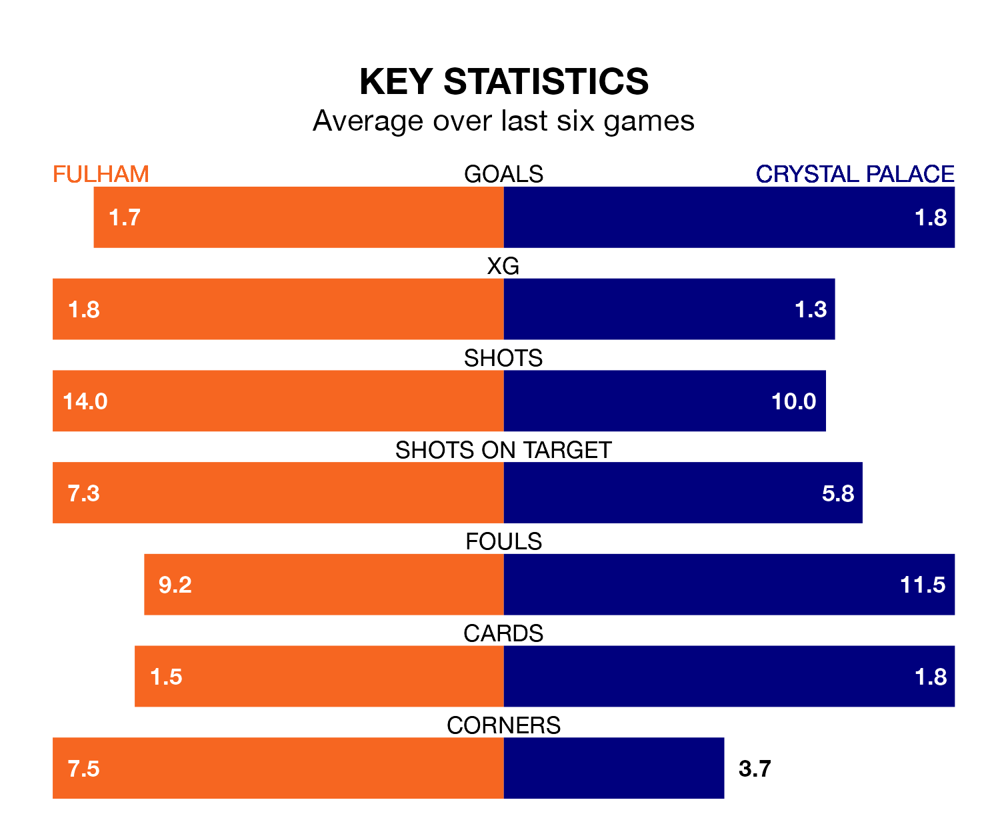

Crystal Palace visit Fulham at Craven Cottage on Saturday on the back of three consecutive wins in the Premier League.
Palace have picked up 10 points from their last six games, and they face a Cottagers side who lost their last match, and have collected seven points from the last possible 18.
In the last 10 years, Fulham and Palace have played each other on eight occasions. Fulham won one of them, Palace three, and they drew four times.
On average, the Cottagers scored 1.0 goal and the Eagles 1.2 in those matches.
Their last meeting was on September 23, when they played out a 0-0 draw.
With Bernd Leno between the sticks, Fulham can rely on one of the league's safest pair of hands. He has kept nine clean sheets in his 34 appearances this season, and only two other 'keepers – Arsenal's David Raya and Everton's Jordan Pickford – have been able to prevent the opposition scoring on more occasions in the Premier League.
In Palace's net, Sam Johnstone has six clean sheets in 20 games.
The Eagles are 15th in the table after 34 games, of which they have won 10 and drawn nine, earning 39 points.
The Cottagers are two places ahead of the away side in 13th, with 12 wins and six draws putting them on 42 points.
With 44 goals in 34 games so far this season, Palace are scoring at below the league average rate with 1.3 goals per game. And they are conceding at an average rate, letting in 56 goals at a rate of 1.6 per game.
The hosts are also below average scorers, with 1.5 goals per game, compared to a league average of 1.6. They have conceded 1.6 goals per game.
Fulham's last match was on Sunday, a 3-1 loss against Liverpool, with Timothy Castagne getting the goal for the Cottagers.
Palace beat Newcastle United 2-0 last time out, on Wednesday, with Jean-Philippe Mateta on the scoresheet.
Updated: 07:59 (UTC), 26/04/24